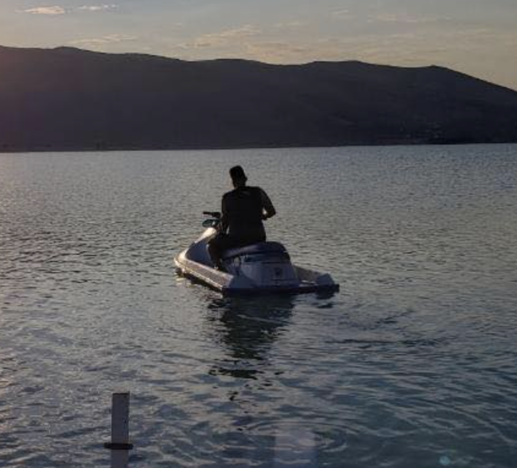

Ahmed Alsaisaban

Summary:
Creative software developer with educational background and hands-on applicable
project-building experience in my classes; effective both on team-based and self-managed projects;
dedicated to maintaining current industry knowledge, skills, and certifications
Education:
WEBER STATE UNIVERSITY | Ogden, Utah
Bachelor’s degree in Computer Science, 2018
Relevant Coursework:
- Software Engineering
- Operating Systems
- Project Management
- Obj Orient User Interface Java
- Database Deign
- Foundation Game Development
Project Highlights:
- Obj Orient User Interface Java – created Mah Jong Tiles game using Java
- Systems Engineering – Teamed with group of 4 in conceptualization and design of a Sprinkler System application that waters plants; able to create under budget
- Game Designing – Teamed with a group of 2 conceptualization and design a fully functioning game for Mac and PC
Experience:
- PlanSwift – Experienced in activation and troubleshooting
- LogMeIn – Used LogMeIn to chat and to connect to client’s computer
- Team – Used Team for communication
- Salesforce – Experienced in documentation in SalesForce
- RingCentral – Used RingCentral for calls
Languages:
SOTWARE DEVELOPER / PROGRAMMER
- Fluent in Arabic And English
Other:
My Hobbies
Contact Me